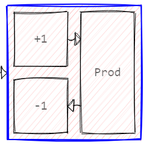
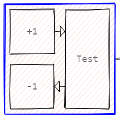
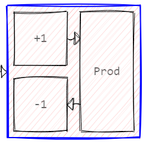
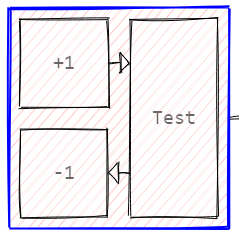
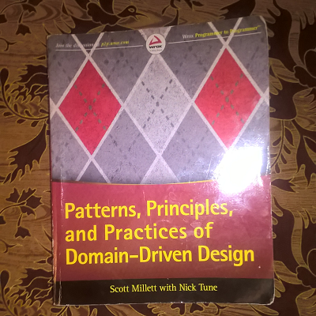
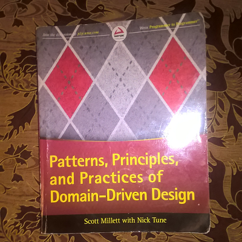

Michal Paszkiewicz
Michal's Blog
Welcome to my blog - an eclectic collection of book reviews, thoughts, fun side projects, tutorials and all sorts of other silliness that I end up doing in my spare time. If you are trying to recruit me, I would expect you to have at least read a few of my articles so you don't end up trying to hire me to raise chickens on the moon. If you are just browsing, I hope you will find what you are looking for. If you already know me, then tough luck. In any case, please enjoy your stay here.

New book!
My new book The Perfect Transport: and the science of why you can't have it is now on sale on amazon, or can be ordered at your local bookstore.


 



 



published: Fri Mar 03 2023
New book!
My new book The Perfect Transport: and the science of why you can't have it is now on sale on amazon, or can be ordered at your local bookstore.

Contact me: michalpaszkiewicz@hotmail.com